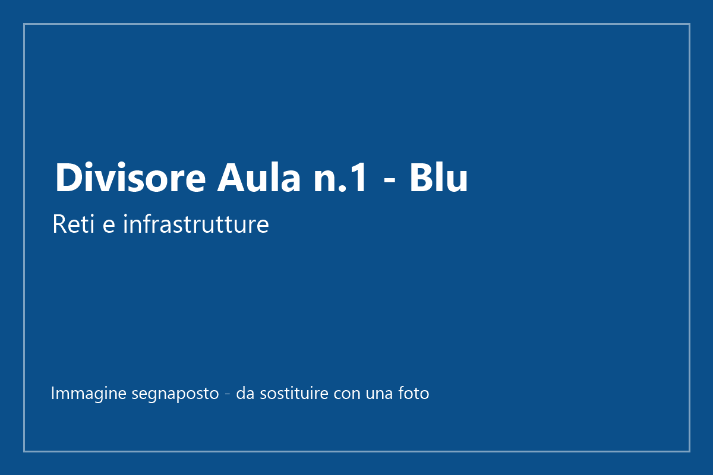

Dietro ogni app, sito o servizio online c'è un'infrastruttura da costruire, gestire e proteggere.
Questo spazio introduce le competenze tecniche legate a reti, sistemi operativi, server, cloud e infrastrutture digitali.
Sono le fondamenta su cui si costruisce la cybersecurity: per difendere una rete bisogna prima capire come funziona, quali dispositivi la compongono e dove possono nascere le vulnerabilità.
Nel percorso ITS Academy (istituto tecnico superiore) queste conoscenze vengono applicate in laboratorio e nei project work con le aziende.

Ultimo aggiornamento: 13/11/2026